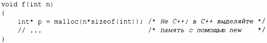
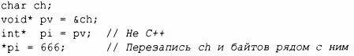

⇐16.3.2.1 Проблемы стиля 16.3.2.3 Компоновка⇒
В С void* может использоваться как правый операнд присваивания или инициализации переменной указателя любого типа; в С++ это может быть не так. Например:
Это, пожалуй, самая трудная несовместимость, с которой приходится иметь дело. Обратите внимание, что неявное преобразование void* в другой тип указателя в общем случае не является безвредным:
В обоих языках приводите результат malloc () к верному типу. Если вы работаете только с С++, избегайте malloc ().